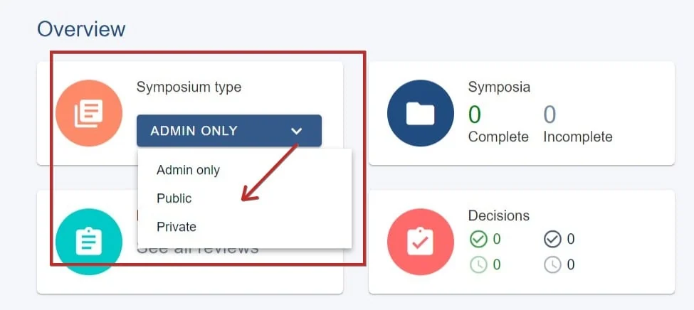
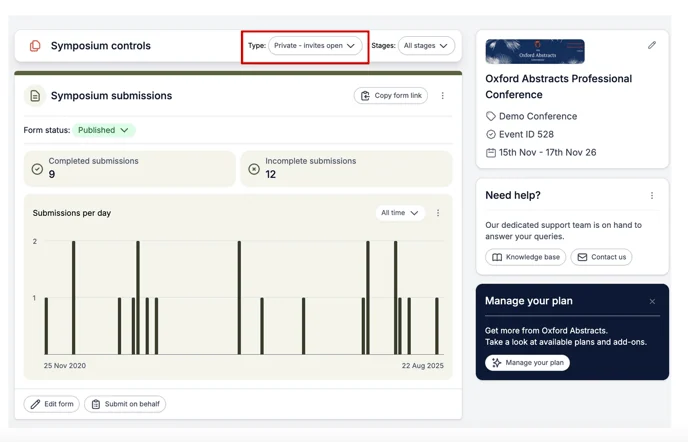
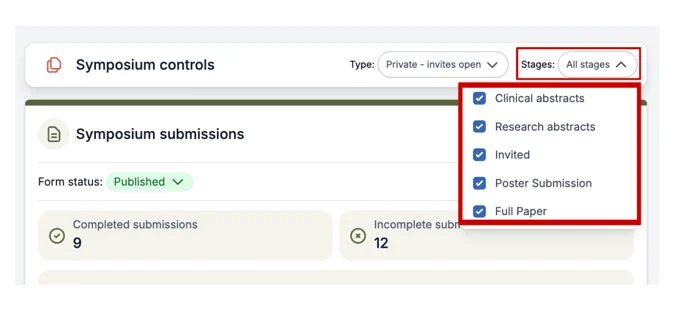
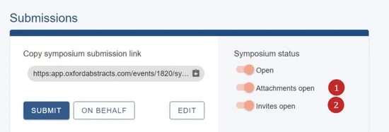
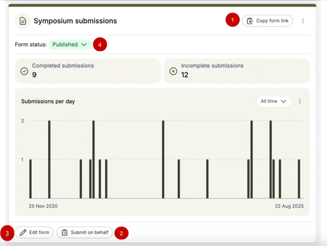
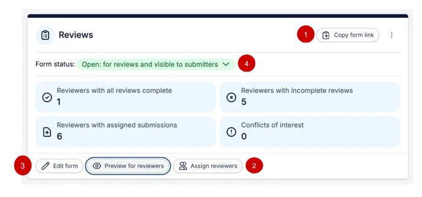
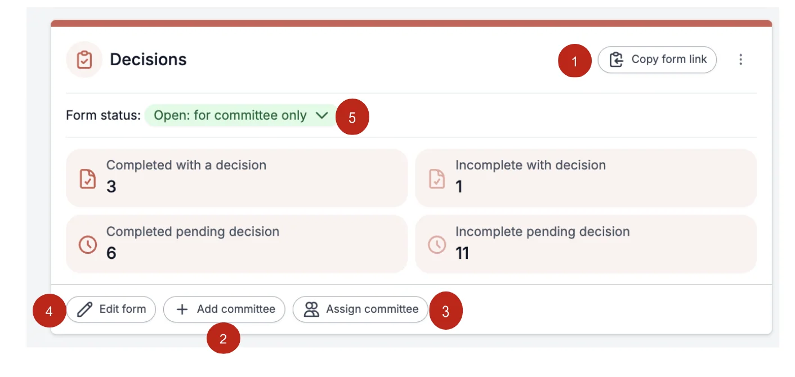

Symposia overview & dashboard
For event organisersNot an organiser?
Symposia is an optional add-on. It lets submitters group abstracts together under a single heading, with its own submission form, reviewing and decisions, run alongside your normal abstract collection.
Choose how symposia are collected#
Decide this first, because it controls who can create a symposium and who can attach abstracts to one.
Public - anyone can suggest a symposium, and anyone can attach their abstract to any symposium. Useful when you want ideas to emerge from your submitters. Some symposia may end up very large; you can rearrange them later.
Private - anyone can submit a symposium, but they can only attach abstracts to their own symposia or ones they have been invited to. Invitees get an email with instructions and see their invitations when they log in. This is the most common setup, and gives the person running a symposium control over who takes part.
Admin only - only administrators create symposia, and anyone can attach an abstract to them. Useful when you already have a fixed list of symposia. To add administrators, see Manage users.
The symposium dashboard#
Go to Event dashboard → Symposium → Dashboard**.

It works like your standard event dashboard, but for symposia rather than abstracts, with panels for controls, submissions, reviews and decisions.
Symposium controls#
At the very top of the dashboard. Use the Type dropdown to switch between public, private and admin only, and to open or close invitations.

If you also have Multi-stage, use the Stages dropdown to choose which stages the symposium module applies to.

Two switches worth knowing#
Alongside the switch that opens symposium submissions, you will see:
- Attachments - whether abstracts can be attached to symposia. This works independently of the submission switch, so you can stop new symposia while still allowing attachments to existing ones.
- Invitations - only appears if you chose Private. It lets symposium submitters invite contributors. Also independent of the other switches.
You can still see the attachments functionality even when the toggle is off. To test what submitters see, use a non-admin account.

Submissions panel#
- Symposium submission form link - copy this into your website or emails.
- Submit on behalf of someone else.
- Edit the submission form - see Designing the symposia forms.
- Submission status - open and close symposium submissions.

Reviews panel#
- Review form link.
- Assign reviewers - see Symposia reviewing.
- Edit the review form.
- Review status - open and close reviewing.

Decisions panel#
- Committee decisions form link.
- Add and invite committee members.
- Assign specific categories to committee members.
- Edit the decision form.
- Open and close decisions.

Next steps#
Didn't solve it? Ask our support team
No question is too small, and there's no charge for asking. Raise a ticket and someone who knows the software will pick it up.
Did this page solve it?
Thanks — this helps us fix it.